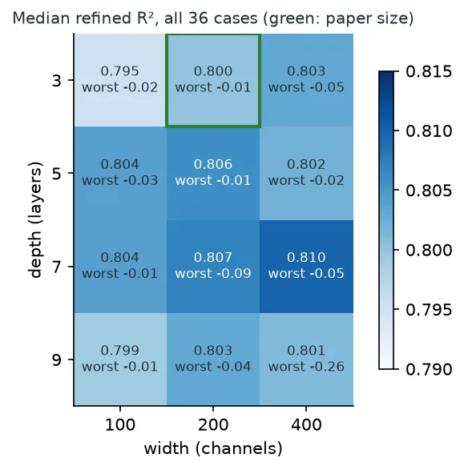
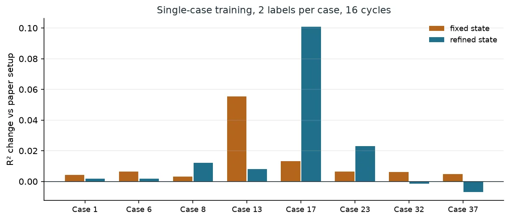
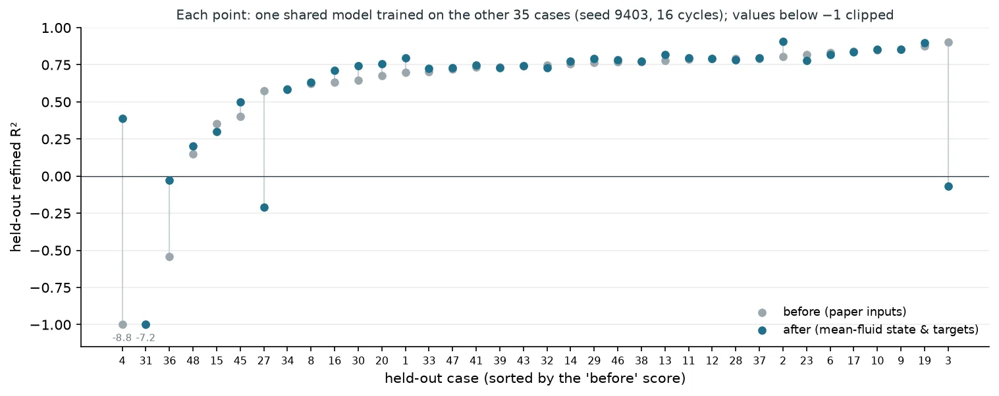

Entry
The first version of the one-particle flow surrogate was trained one simulation case at a time. That is fine for a proof of concept and useless as a tool: a surrogate that has to be retrained for every new suspension saves nothing. So the next question was whether a single model, trained on all 36 packed cases at once, could match the per-case models, and whether it could predict cases it had never seen.
The first shared model, and what broke it
The shared model trained without trouble and scored a median R² of 0.71 across the 36 cases, about 0.09 below the per-case models. On a held-out split (28 cases in training, 8 never seen), the self-consistent state improved five of the eight unseen cases and diverged on two. One of those, Case 32, has a particle-to-fluid density ratio of 256; the other, Case 3, is the only 64-particle case at density ratio 55.
The tempting reading was capacity: one network stretched over 36 different suspensions. A deeper network did close most of the gap on the training cases. But the density ratio enters the network as a raw number between 2.56 and 256, next to a volume fraction between 0.02 and 0.29 and a Reynolds number between about 5 and 70. Raw, it dominates the scalar input.
Putting the Reynolds number and density ratio on a log scale (and standardising all three scalars) changed the picture.
With log-scaled inputs the held-out median rose from 0.68 to 0.75, and the self-consistent state improved all eight unseen cases. That held at eight seeds (held-out median 0.743, gains on 8 of 8). The deeper network, by contrast, fitted the training cases about as well as the log-scaled paper model and then reached only 0.43 on the held-out cases: depth had been compensating for a badly scaled input, and that compensation did not transfer.
With the inputs scaled, capacity stopped mattering.

Across a fourfold range of width and a threefold range of depth, the median moved within 0.795 to 0.810, and the larger models had worse worst cases. We kept the original size.
Fixing the reference frame
Prof. Balachandar pointed out that our particle state was defined in the wrong frame. The simulations conserve zero net flux of the mixture, so while the particles settle, the fluid moves upward on average, by ⟨u_f⟩ = −φ⟨u_p⟩ / (1 − φ). A particle's slip, the quantity its one-particle response depends on, should be measured relative to that mean fluid velocity, not to a fluid at rest. In a suspension at volume fraction 0.26 the corrected state is about 1.36 times the particle velocity; in a dilute one it barely changes.

In per-case training the correction raised the starting (fixed-state) accuracy everywhere, by 0.055 in Case 13, and nudged the refined result up. At density ratio 256 it changed almost nothing, consistent with heavy particles whose own velocity is already a reasonable local state. In the shared model the correction only paid off once the predicted fluid velocity was also measured relative to the mean flow; correcting the state alone made two unseen cases worse, because the network then had to rebuild the mean upflow out of particle contributions. With both, the held-out median reached 0.765, the best shared model so far.
The baseline we should have used first
For a while the comparison looked finished: the shared model with log-scaled inputs reached 0.807 against 0.799 for the per-case models. But those per-case models used raw inputs. Trained with the same log-scaled inputs, they reach 0.813 at 16 cycles and 0.817 at 32, and the gap reopens to about 0.014 to 0.020. Giving the shared model two training epochs per cycle (the per-case models get four) brings it back to about 0.010, concentrated in a few 64-particle cases. The lesson is general: when an input change helps, rerun the baseline with the same change before declaring parity.
Where it stops working
To map transfer case by case, we trained 36 shared models, each leaving one case out, and scored each on the case it never saw.

Most cases transfer: the held-out median is 0.745 against 0.799 for the same cases in training, and the two seeds we ran agree to about 0.01. The failures are cases with no near neighbour in particle count, density ratio and Reynolds number. Case 4, the only 64-particle case at density ratio 256, fell to −8.8, and the self-consistent state made it worse, amplifying an error the fixed state had already made. The mean-fluid correction rescued it (0.39) and softened two others, but two different cases then failed; a second seed is separating noise from effect.
We also tried to make extrapolation safe without labels: watch each case's fixed-point residual and hold or reset its state when the residual leaves the range seen in training. The residual flagged the worst cases and never fired on good ones, but neither action reliably helped, because a model trained on refined states misreads an unrefined one. The honest conclusion is that this surrogate interpolates, and the fix for extrapolation is data coverage, not a correction inside the model.